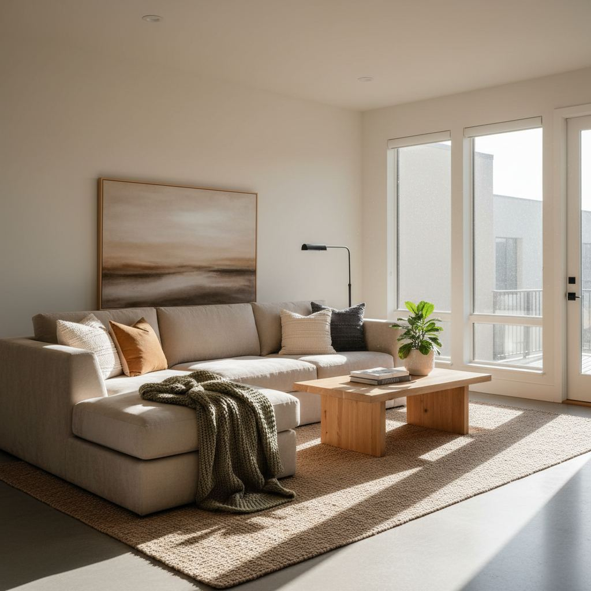

How to Choose a Sofa: The Complete Buyer's Guide

A sofa is one of the few pieces of furniture you use every day for a decade or more. It deserves more thought than a paint color, but most buyers spend more time picking a throw pillow. This guide walks through the four things that decide whether a sofa lasts: the frame, the cushions, the fabric, and the fit for your room.
Set a realistic budget
In 2026, a well-made three-seat sofa built to last 10–15 years typically starts around 1,500 USD. Below 800 USD, expect softwood or engineered frames and fills that flatten within two years. That is not always wrong — a starter apartment sofa may only need to last five years — but be honest with yourself about the trade-off.
The frame: what to look for
The frame is the part you cannot fix later. Ask what wood it is (kiln-dried hardwood such as oak, ash, or maple is the standard), how it is joined (mortise-and-tenon or dowelled joints beat staples), and whether corners are reinforced with blocks.
Cushion fills, compared
- High-resilience foam wrapped in polyester: firm, low maintenance, holds shape well. Best for households that don't want to fluff cushions.
- Foam core wrapped in down/feather: soft look, needs weekly fluffing to stay full. Best when you value a lived-in look.
- All down/feather: cloud-like feel, requires the most maintenance, flattens visibly between uses.
Choosing a fabric
Rub count (measured as Martindale or double rubs) tells you roughly how long a fabric will resist visible wear. For daily-use family sofas, look for at least 25,000 double rubs. Performance weaves, cotton-linen blends, and tight-weave wools all perform well. Loose weaves and pure linen pill and pull under heavy use.
Sizing for your room
Measure your room, your doorways, and your stairs before you fall in love with anything. A common heartbreak: the sofa fits the room but not the front door. Ask the retailer for a diagram with the disassembled dimensions.
Questions to ask before you buy
- What wood is the frame, and how are the joints made?
- What is the seat cushion fill and what is the expected lifespan?
- What is the rub count of the fabric?
- Are cushion covers removable and washable?
- What is the warranty on the frame, cushions, and fabric?

Sofa Style: Defining Your Aesthetic
Beyond mere comfort, your sofa is a pivotal design statement. Consider your home's overall aesthetic and how the sofa will integrate, rather than dominate. For a contemporary, minimalist look prevalent in many urban apartments, a low-profile sofa with clean lines, square arms, and perhaps a bench-style cushion (e.g., the 'Haven' sofa from West Elm) works beautifully. Embrace lighter, neutral fabrics like linen or performance velvet. If your home leans towards traditional-transitional, a Chesterfield with its rolled arms, tufting, and often leather upholstery adds a classic gravitas. For a more bohemian or eclectic vibe, an English roll-arm sofa with its plush, rounded form and a slipcover in a textured fabric like washed linen or even a pattern can feel lived-in and inviting. Pay attention to leg style – tapered wood for mid-century looks, turned legs for traditional, and hidden or metal legs for modern designs. Don't be afraid to mix and match styles subtly; an ultra-modern sofa can be softened with antique side tables, for example.
The Arm Style: Considerations for Comfort and Space
Often overlooked, the sofa's arm style significantly impacts both comfort and the visual footprint. Wide, flat arms (like those on many Scandinavian-inspired designs) are excellent for holding drinks, books, or a remote, acting as a mini side table. However, they consume more floor space and can make a smaller room feel more crowded. Rolled arms, characteristic of traditional or classic sofas, offer a soft, curved aesthetic that feels luxurious and provides a comfortable resting place for your head if you're sprawling out. Track arms are slim, straight, and often rectangular, lending a tailored, modern elegance while maximizing seating width – ideal for smaller spaces where every inch counts. Flared arms, found on some transitional or contemporary pieces, offer a gentle outward curve, providing a good balance between comfort and a modern silhouette. For ultimate flexibility and a casual feel, a armless sofa or chaise is an option, though less common as a primary seating piece, it can be great for open-concept layouts.
Durability and Maintenance for Longevity
Investing in a sofa means planning for its lifespan. Beyond fabric and frame, consider the practicalities of every day. If you have pets or children, stain-resistant, performance fabrics (like Sunbrella or Crypton) are non-negotiable. Look for fabrics rated 30,000 double rubs or higher on the Wyzenbeek test for residential heavy-duty use. For wood frames, kiln-dried hardwood like maple, oak, or alder is superior to pine or particleboard, resisting warping and cracking for decades. Ensure joinery is mortise-and-tenon or double-dowelled, not just stapled or glued. For cushion maintenance, flippable cushions prolong their life and allow for even wear – a feature often found on higher-end pieces from brands like Lee Industries or Cisco Home. Removable, machine-washable slipcovers (like those from IKEA or Pottery Barn) are a lifesaver for busy households, simplifying deep cleaning and offering flexibility for seasonal changes or complete style overhauls.
Sofa Leg Materials and Height
The legs of a sofa, while seemingly minor, play a crucial role in both aesthetics and practicality. Material options include solid wood (oak, walnut, espresso finishes being common), metal (chrome, brushed brass, matte black), or even hidden plastic glides for a 'floating' effect. Tapered wooden legs are a signatory of mid-century modern design, often raising the sofa enough for a robotic vacuum to pass underneath (typically 4-6 inches clearance). Metal legs can add an industrial or sleek contemporary edge. Consider the leg height: taller legs (6+ inches) create an airy, open feel, making a room appear larger and providing easy cleaning access. Shorter legs (2-4 inches) lend a more grounded, traditional, or even lounging aesthetic, but can make retrieving lost items or vacuuming more challenging. Always check that legs are securely attached with bolts or screws, not just glued, as this significantly impacts stability and longevity.
- **Taller Legs (6+ inches):** Creates an open, airy feel; excellent for cleaning underneath; common in mid-century and modern styles.
- **Shorter Legs (2-4 inches):** More grounded, traditional look; can make cleaning underneath more difficult; often found on sectionals or low-profile designs.
- **Hidden Legs:** Creates a 'floating' effect; minimal visual impact; common in ultra-modern designs.
Seat Depth and Height: Tailoring to Your Comfort
Beyond overall dimensions, seat depth and height are critical for personal comfort. A standard seat depth ranges from 21-24 inches, accommodating most adults comfortably, allowing feet to rest flat on the floor with knees at a 90-degree angle. For taller individuals or those who love to lounge, a deeper seat (25-30 inches, often found on 'lounge' or 'movie night' sofas) provides ample room to curl up, but might require extra throw pillows for back support for shorter people. Conversely, a shallower seat (19-20 inches, common in formal or traditional designs) promotes good posture but may feel less relaxed. Seat height typically ranges from 17-19 inches. Shorter individuals benefit from lower seats (17 inches), while taller people might prefer a 19-inch height to avoid feeling cramped. Test these dimensions in person – sit naturally, see if your feet rest flat, and if the edge of the seat hits mid-thigh or higher, indicating an uncomfortable fit.
Quick Guide to Seat Dimensions:
- **Standard Seat Depth:** 21-24 inches for general comfort.
- **Lounge Seat Depth:** 25-30 inches for sprawling; consider extra lumbar pillows.
- **Formal Seat Depth:** 19-20 inches for upright sitting; less common for everyday lounging.
- **Standard Seat Height:** 17-19 inches; test to ensure feet are flat on the floor.
Key takeaways
- Prioritize the frame — it's the only part you cannot fix.
- For daily use, choose foam-wrapped-in-down or firm HR foam.
- Aim for at least 25,000 rubs on family sofa fabric.
- Measure doorways and stairs, not just the room.
Frequently asked questions
Is a sectional or a sofa better for a small room?
A well-placed sectional often seats more people in less floor space than a sofa plus separate chairs, but it commits you to one layout. If you rearrange often, choose a sofa.
How long should a good sofa last?
A well-made hardwood-frame sofa with a firm foam-and-down cushion typically holds up for 10–15 years with a professional reupholstery around year 12.

Sophia Bennett is a certified interior stylist and the senior editor at Styleire. She has spent more than eight years helping homeowners and renters create warm, functional interiors, with hands-on experience across small city apartments and family homes. Her work has been informed by close collaboration with independent designers, craftspeople, and product testers.
View full profile →Related reading

Small Living Room Layout Ideas That Actually Work
The right layout can make a 12x12 living room feel generous. Here is the exact process a stylist uses to plan one, from focal point to rug size.

Living Room Rug Size Guide (With Real Room Examples)
A too-small rug is the most common decorating mistake. Here is how to size a rug for any living room layout.

Sustainable Home Decor Basics: What Actually Matters
Sustainable decor is not one label or one shop. It is a small number of decisions that compound.